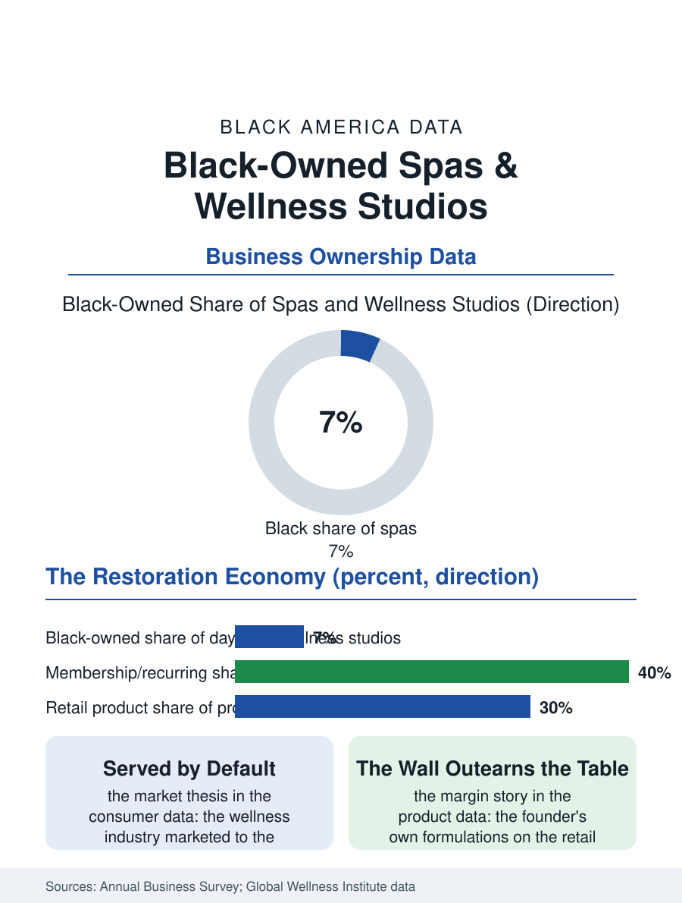

Black Business
Rest, Built as a Business: Black-Owned Spas and Wellness
From the beauty parlor's back room to the membership spa, the founders sell rest to the population the exhaustion files rank first. The spa file.

The Black-owned spa and wellness business grew from the beauty culture's oldest root, the rest and restoration services the cosmetology pioneers bundled with the hair, into a modern tier of day spas, massage practices, and wellness studios whose growth tracks the wellness economy's trillions and the community's claim on its own restoration. The business census folds the trade into the personal care categories. This article reads the spa file.
From the Beauty Parlor's Back Room
The tradition's line runs through the beauty file's founders: the early beauty culturists sold restoration as deliberately as cosmetics, the scalp treatment and the facial as the working woman's sanctioned rest, and the parlor's back room was the wellness industry's first Black address. The modern spa's tier structure follows the service economy's: the day spa with its treatment rooms and its retail wall, the massage practice built on the therapist's license and hands, the wellness studio blending the movement and the treatment, and the med-spa at the medical border, whose injectables and laser services require the physician partnership and post the trade's highest tickets and its heaviest regulation. The Black-owned presence concentrates in the first three tiers, the med-spa's capital and credential gates reproducing the professional files' pattern, while the clientele's composition in the trade data gives the Black spa its market thesis: the wellness industry's marketing historically addressed the affluent white consumer, and the Black consumer's wellness spending, substantial in the consumer data, was served by default rather than by design, leaving the culturally fluent room, its music, its products formulated for the skin and hair the industry stocked last, its practitioners' hands trained on the bodies the textbooks pictured least, as the gap the Black founder builds in. The corporate and hotel channels are the tier's newest distribution in the trade data, the wellness programs of the employers buying the local studio's services for the workforce the shift file describes, and the hotel spas' management contracts placing the independent operator inside the travel economy's walls, each channel a version of the institutional tier the other business files climb toward.
Licenses, Hands, and the Membership Model
The workforce's credential is the massage license's hundreds of hours and the esthetician's similar load, the state boards' patchwork governing the practice's scope in the pattern of the personal care files, with the practitioner's book, the regulars' standing appointments for the treatment as for the hair, being the business's annuity in the chair file's economics translated to the treatment table. The membership model imported from the fitness file, the monthly treatment at the member's rate, stabilized the trade's revenue against the occasion economy's seasonality, the gift certificate's December and the wedding season's peaks, and the franchise tier, the massage and facial chains' units, admitted the Black owner-operator on the franchise file's terms, capital gate and all. The product line is the file's margin story: the retail wall's oils and preparations, increasingly the founder's own formulations in the beauty economy's pattern, carry the margins the service's hours cannot, and the Black wellness brand's shelf, in the spas and then in the general retail, is the trade's current growth story in the consumer data.
Rest as the Product
The spa file closes on the trade's cultural argument, which its founders make explicitly: rest, for the population the exhaustion files describe, the shift worker and the caregiver and the total-work ledger's leaders, is not a luxury category but the recovery the other files' data prescribe, and the Black-owned spa sells it in rooms designed by the people who know the prescription's weight. The industry's growth projections make the trade one of the business section's expanding files, and the ownership question is the standard one in a new setting: whether the community's founders build the tier the wellness tourist and the neighborhood regular share, or whether the chains' map once again draws the amenity around the neighborhoods whose need the health data rank first. The census counts the establishments within the personal care totals. The file's last entry is the treatment room's quiet, the table's warmth, the practitioner's hands doing the century-old work of the beauty parlor's back room at the modern industry's prices, in a business whose founding insight, that Black women's rest was worth building a room for, the wellness economy has at last agreed to underwrite, a market late to the parlor's original idea.
More in Black Business
Black-Owned Businesses: Counts, Receipts, and the Representation Gap
About 161,000 Black-owned employer firms and three million solo ventures: how the Census Bureau counts Black business ownership, where firms concentrate, and the gap between population share and business share.
Black Median Net Worth: The Wealth Gap in Federal Reserve Data
The Federal Reserve puts Black median family net worth at $44,900, against $285,000 for White families — about 16 cents on the dollar. The widest gap in economic data.
Black Buying Power: The $1.8 Trillion Consumer Economy
Black buying power is estimated at about $1.8 trillion — larger than the economy of most nations. What the figure measures, who produces it, and what it buys.
Source: U.S. Census Bureau, Annual Business Survey for personal care services; Global Wellness Institute economy data.